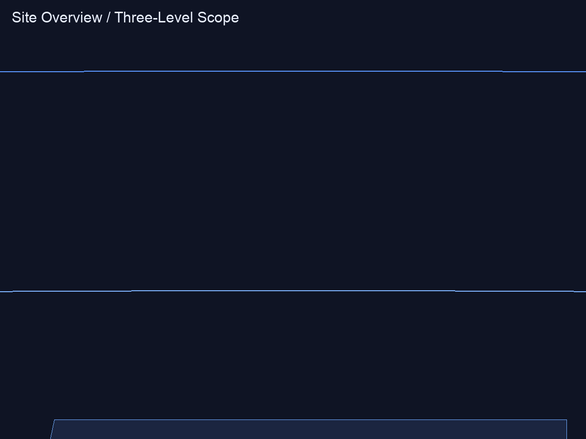
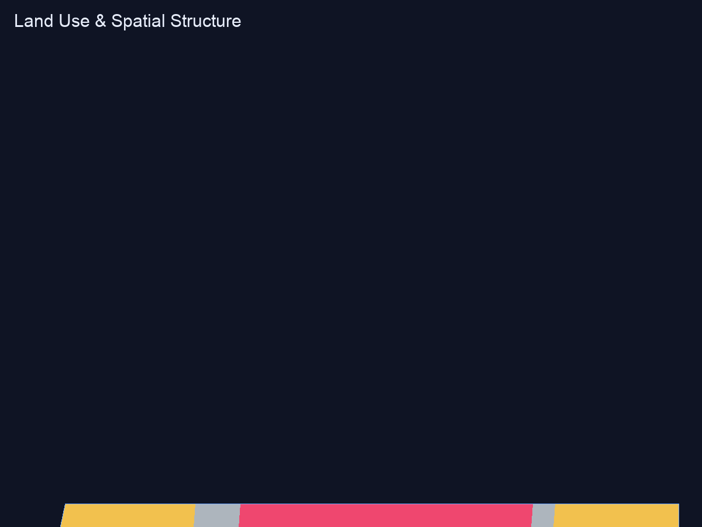
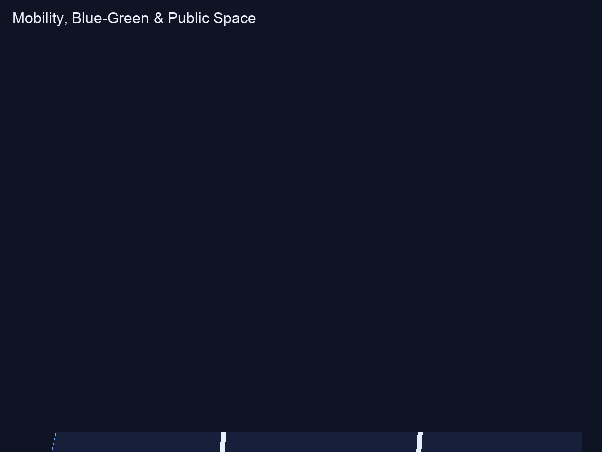
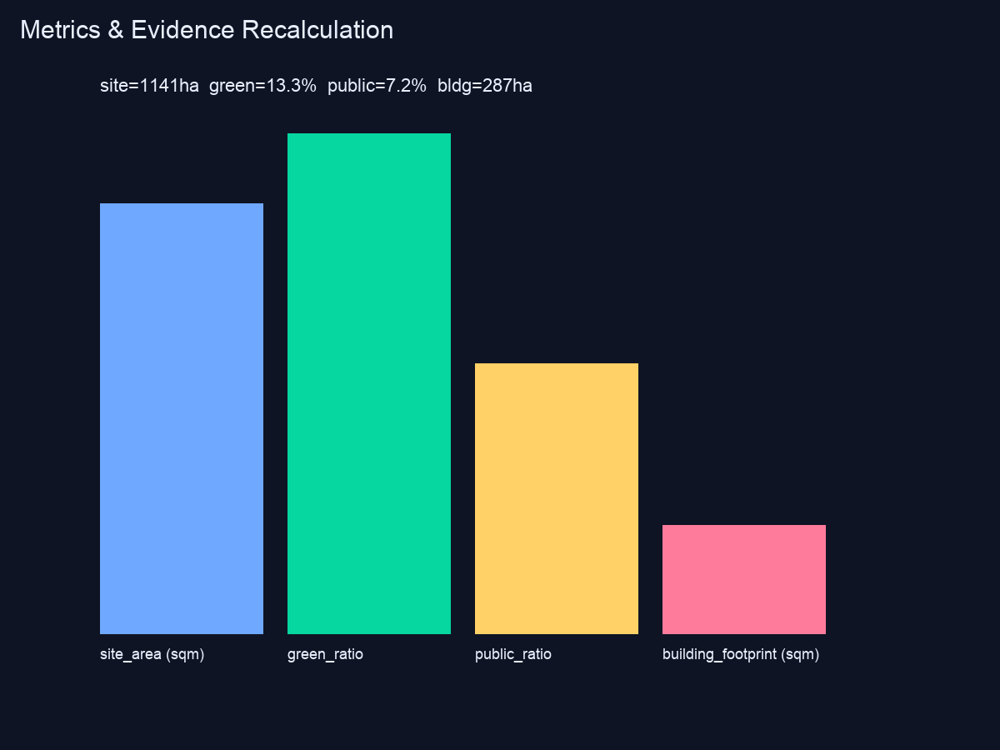

京脉智带 可视化总览
总览地图
本看板以离线方式呈现总览地图相关内容，所有图形与指标均来自本方案几何与指标层。

三层范围
本看板以离线方式呈现三层范围相关内容，所有图形与指标均来自本方案几何与指标层。

重点区域
本看板以离线方式呈现重点区域相关内容，所有图形与指标均来自本方案几何与指标层。
用地分区
本看板以离线方式呈现用地分区相关内容，所有图形与指标均来自本方案几何与指标层。

交通慢行
本看板以离线方式呈现交通慢行相关内容，所有图形与指标均来自本方案几何与指标层。

蓝绿公共空间
本看板以离线方式呈现蓝绿公共空间相关内容，所有图形与指标均来自本方案几何与指标层。
建筑
本看板以离线方式呈现建筑相关内容，所有图形与指标均来自本方案几何与指标层。
更新项目
本看板以离线方式呈现更新项目相关内容，所有图形与指标均来自本方案几何与指标层。
AI 场景
本看板以离线方式呈现AI 场景相关内容，所有图形与指标均来自本方案几何与指标层。
核心指标
本看板以离线方式呈现核心指标相关内容，所有图形与指标均来自本方案几何与指标层。
任务覆盖
本看板以离线方式呈现任务覆盖相关内容，所有图形与指标均来自本方案几何与指标层。
自检状态
本看板以离线方式呈现自检状态相关内容，所有图形与指标均来自本方案几何与指标层。
来源
本看板以离线方式呈现来源相关内容，所有图形与指标均来自本方案几何与指标层。
假设
本看板以离线方式呈现假设相关内容，所有图形与指标均来自本方案几何与指标层。
核心指标
场地面积11412825.386 m²绿地率0.132758公共空间率0.071535上述指标由 metrics.json 以 known 状态声明，并与空间复核复算一致。